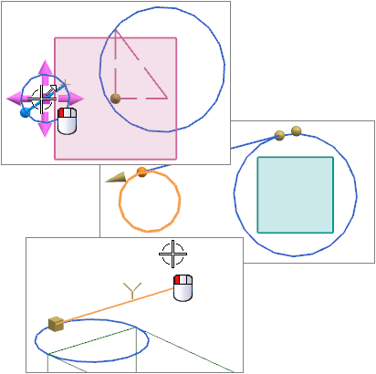

基本曲线
预计完成此课程需要：1–2 小时

在这个课程中，您将学习如何创建简单曲线 – 直线和圆弧。课程中包含：
-
关联和非关联的直线和圆弧
-
使用基本曲线(非关联的直线、圆弧和圆角)创建轮廓和截面
当您需要较少的曲线时，关联直线和圆弧就很实用，它们需要与先前创建的几何体链接，如果您需要大量的轮廓或截面，您最好使用草图。要获取更多信息，参见草图课程。
设置信息
|
|
|
|
|
NX 角色：具有完整菜单的基本功能 |